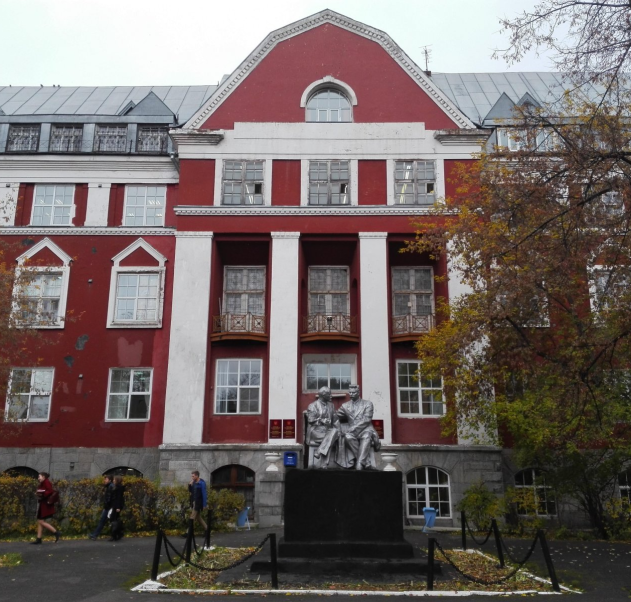

ИКНТ
Пермский Государственный Национально Исследовательский Университет
Для этого вам нужно будет перейти на официальный сайт ПГНИУ. На официльном сайте доступна вся инофрмация для поступления в наш Институт.
Направления для поступления.
Вся доступные направления так же указаны на официальном сате ПГНИУ.
Вне учебная активность студентов.
Наш Институт заботиться о физическом состояние своих студентов, поэтому существует огромное количество различных секций. Так же имеются дополнительные факультативы.
Айдаров Юрий Рафаэлевич
Основы Web-технологий
Городилов Алексей Юрьевич
Директор нашего университета
Кетова Валерия Дмитриевна
Введение в специальность
Основной задачей Института компьютерных наук и технологий ПГНИУ является создание условий для обучения, в которых каждый поступивший сможет найти свое направление деятельности в большом мире информационных технологий и полностью раскрыть свой интеллектуальный потенциал.
Пермский университет хорошо понимает, что поступающие на ИТ-направления бакалавриата выпускники школ не всегда четко сознают, кем именно они хотят стать: специалистами по машинному обучению, DevOps инженерами, экспертами в области компьютерной безопасности, системными программистами, исследователями-создателями новых компьютерных моделей, или еще кем-то из огромного перечня специалистов мира ИТ. Поэтому поступающим в институт мы предлагаем программу обучения, которая на 25% формируется самим студентом индивидуально в процессе обучения, путем выбора дисциплин из предлагаемых каждый год, начиная со 2 курса.
